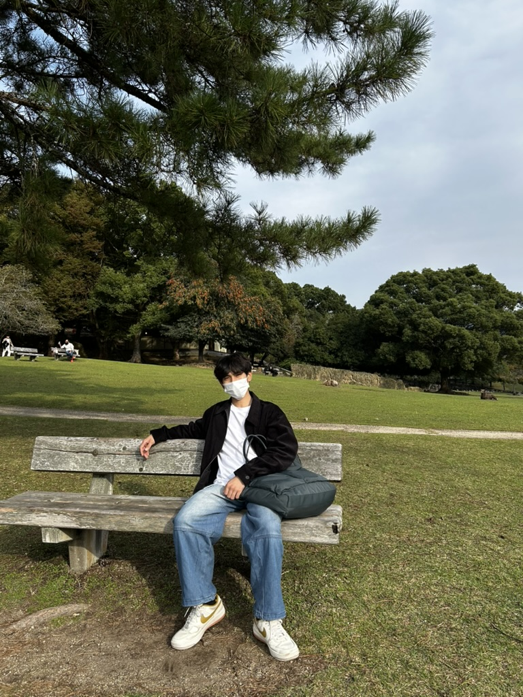

Aung Ko Ko Oo
Building natural language processing and intelligent tutoring systems for low-resource languages — with the same care an artisan brings to a well-made instrument.
Education
Formal coursework paired with self-directed research in artificial intelligence.
MicroMasters® Program in Statistics and Data Science
Massachusetts Institute of Technology (MIT) — Cambridge, MA, USA (Online)Graduate-level coursework in probability, statistics, and data analysis, forming the theoretical foundation behind the machine learning systems developed in current research work.
Bachelor of Science in Computer Science
University of the People — Pasadena, CA, USA · GPA 3.8 / 4.0Core computer science curriculum spanning algorithms, software engineering, and applied mathematics, pursued alongside active research and open-source work.

Research
Founder & Lead Researcher at the Burmese Artificial Intelligence Research Institute (Mar 2026 – Present), building open tools and benchmarks for low-resource language AI.
NLP for Low-Resource Languages
Data parsing tools, tokenization frameworks, and transformer fine-tuning benchmarks built for low-resource character architectures such as Burmese.
Machine learning
Developing robust machine learning architectures, statistical models, and custom optimization algorithms designed for complex data patterns and low-resource environments.
Quantum Computing
Exploring quantum algorithms, quantum machine learning frameworks, and theoretical architectures to address computational bottlenecks in complex optimization problems.
Computer Vision
NumPy-optimized vision pipelines handling irregular character layouts and linguistic segmentation for scripts standard tooling wasn't built for.
Robotics & Human-Robot Interaction
A longer-term interest in bringing low-resource-language understanding into embodied, interactive systems people can speak with naturally.
Artificial Intelligence
Designing scalable artificial intelligence systems, foundation model pipelines, and integrative frameworks to address specialized downstream tasks and real-world application domains.
Publications
Recent research on applying deep learning and language models to low-resource, Burmese-language problems.
Developed an algorithmic pipeline pairing Deep Knowledge Tracing (DKT) frameworks with syntax analyzers to optimize adaptive technical learning structures for the Burmese language.
View DOI →Designed a domain-specific Retrieval-Augmented Generation (RAG) fine-tuning pipeline engineered to bound factual anomalies within generative models handling complex, low-resource string dynamics.
View DOI →Projects
Tools and pipelines built to support research in low-resource-language AI.
Intelligent Tutoring System — NLP Engine
Lead DeveloperBuilt and deployed deep learning text-processing pipelines to evaluate student domain-specific inputs in low-resource environments, integrating custom tokenization with classification models to map student response logs for real-time proficiency tracking. Apr 2026 – Present
Low-Resource Language Vision & Sequence Benchmarks
Independent CreatorImplemented NumPy-optimized computer vision pipelines and sequence-to-sequence architectures to handle irregular character layouts and linguistic segmentation, along with standalone tools for dataset ingestion and downstream evaluation.

Curriculum Vitae
Research experience and technical skills at a glance.